Le groupe a été crée en 1981 les membres sont Lars Ulrich, James Hetfield, Dave Mustain et Clif Burton
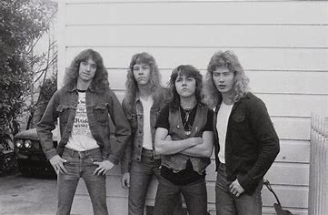Dave Mustain est remplacé tres vite par kirk Hammet
Leur premier album est Kill'Em All sortie en 1983
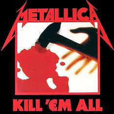Grace à la renommé de leurs permier album il sort Ride The Lightning en 1984
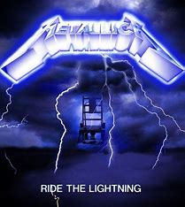2 ans après le groupe sort un nouvel album Master Of The Puppet
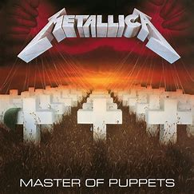Mais dans la meme année Clif Burton meurt dans un accident lors de leur tournée
En 1988 ils sortent l'album ...And Justice For All
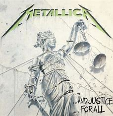1991 sort le Black Album
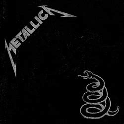1996-1997 ils sortent deux album Load et Reload
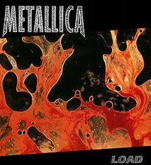 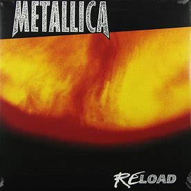2003 marque la venue de Robert Trujillo et de la sortie de St Anger leur nouvel album
2006-2008 est la date de sortie de Death Magnetic
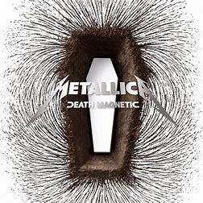2016 sort Hardwired...To Self-Destruct
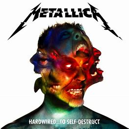2023 est l'année de leur dernier album en date 72 Seasons
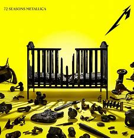